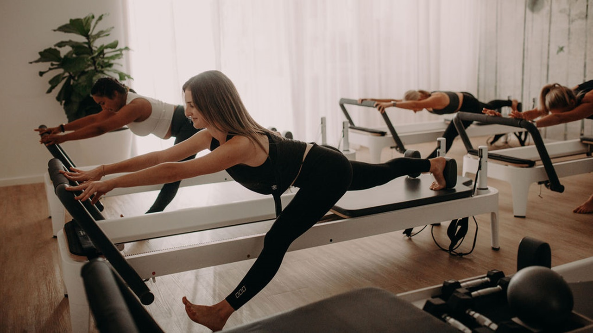

PILATES
Pilates, Latihan untuk Kekuatan dan Keseimbangan Tubuh
Pilates merupakan latihan fisik yang berfokus pada kekuatan otot inti, postur tubuh, fleksibilitas, dan pengendalian gerakan. Latihan ini dapat dilakukan menggunakan matras atau peralatan khusus.
Gerakan Pilates dilakukan secara terkontrol dengan memperhatikan pernapasan. Latihan ini dapat membantu meningkatkan kesadaran tubuh dan koordinasi gerakan.
Pemula dapat memulai dengan gerakan dasar dan menyesuaikannya dengan kemampuan tubuh. Teknik yang benar penting untuk membantu melakukan latihan dengan aman.